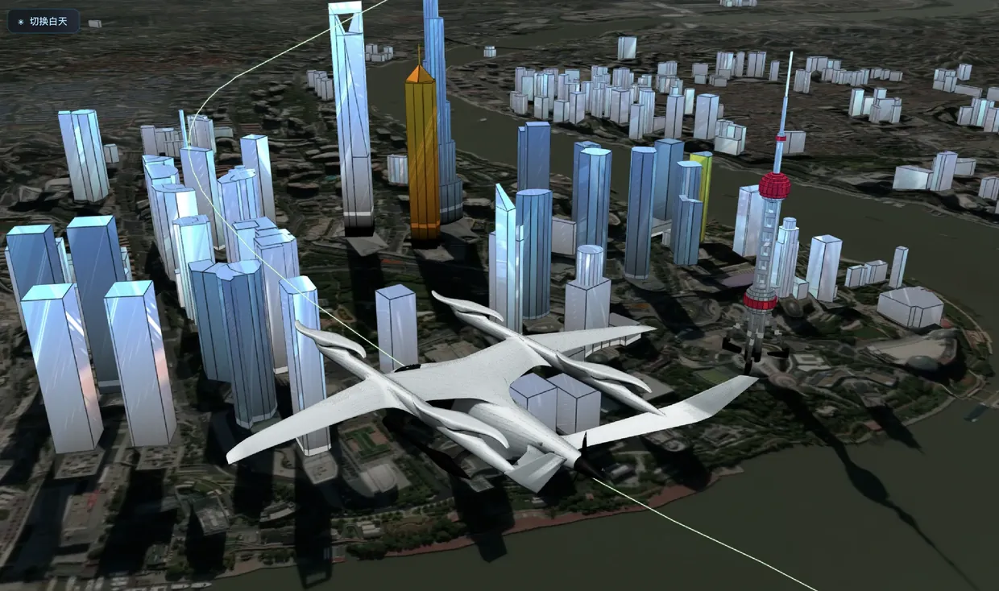
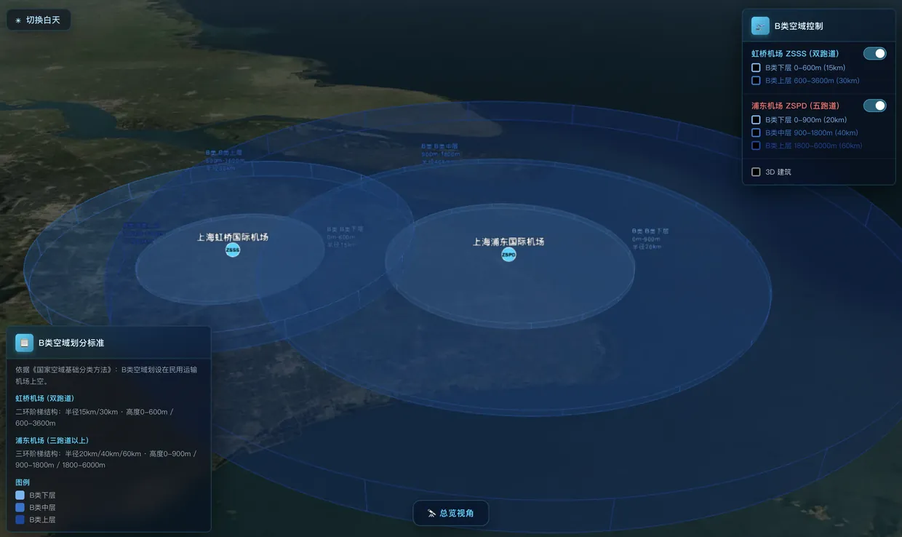
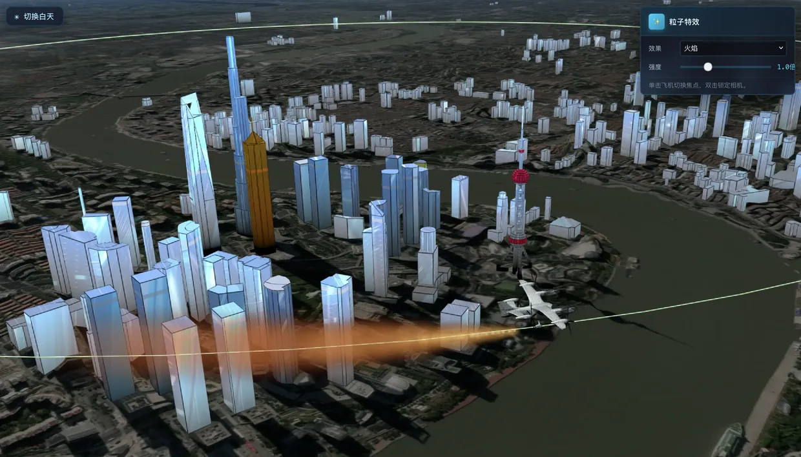
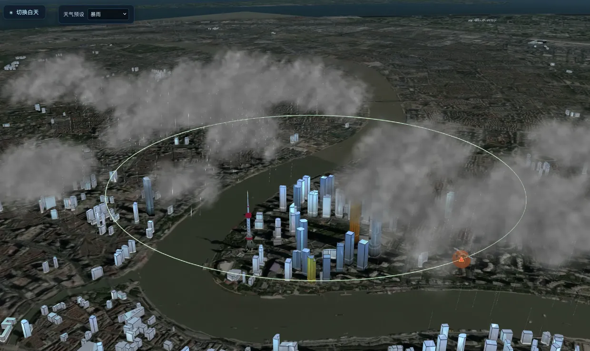

CesiumJS 三维地球实践
以陆家嘴为场景，展示航线动画、空域与天气效果，打开即可体验。
项目缘起
三维地球可视化一直是前端领域最酷的技术方向之一。CesiumJS 作为最成熟的开源三维地球引擎，功能强大但上手门槛不低——API 繁多、概念复杂，新手往往不知从何入手。
cesium-example 正是为了解决这个问题而生：一个围绕上海陆家嘴真实场景的示例集，从最基础的飞行航线到复杂的天气模拟，6 个递进式示例带你一步步掌握 CesiumJS 的核心能力。
🌐 在线预览：yuwb.dev/cesium
设计哲学
项目有三个核心设计原则：
零依赖、零构建——整个项目没有 package.json，没有 Node.js，没有 Webpack/Vite。CesiumJS 通过 CDN 引入，所有代码都是原生 HTML/CSS/JS。git clone 之后一行命令就能跑起来：
npx serve .
# 或
python3 -m http.server 8080
模块化共享——6 个示例不是各自为政的独立 demo，而是通过 shared/ 目录下的公共模块（SceneManager、FlightTracker、TailEffect 等）实现逻辑复用。每个示例的 main.js 只包含业务编排代码，绝不重复造轮子。
真实场景驱动——所有示例围绕上海陆家嘴区域，使用真实的 OSM 建筑数据和虹桥/浦东机场坐标。不是抽象的 demo，而是你可以直接对照地图理解的场景。
六个示例详解
✈️ 飞行航线（2 个示例）

1. 基础圆形航线
围绕东方明珠的圆形闭合航线，展示 CesiumJS 的基础能力：
- 飞机实体 +
VelocityOrientationProperty自动朝向 - 螺旋桨加速动画（15 倍速轮询驱动）
- 尾流预警涟漪效果（4 层椭球体 + 警告图标）
- 玻璃拟态飞行信息面板
- 点击/双击交互（面板切换 / 相机锁定）
- 日夜切换
这是入门的最佳起点，代码最简洁，但已经涵盖了实体创建、属性绑定、相机控制、模型动画控制等核心概念。
2. 圆角矩形航线 + 侧倾姿态
这个示例在基础航线上做了几个关键升级：
- 圆角矩形航线：转弯处自动侧倾（banking），飞机不再是"平移"过弯，而是真实的飞行姿态
- 距离比例采样：转弯段采样更密，直飞段采样更疏，实现自然的"入弯减速、出弯加速"
- 四元数合成：通过
createBankedOrientationProperty在 ENU 局部坐标系下组合航向和侧倾旋转 - Hermite 插值：使用
HermitePolynomialApproximation实现平滑姿态过渡 - ENU 近距相机跟随：基于东-北-天局部坐标系的精确跟随，支持滚轮缩放
- 螺旋桨加速动画：同样 15 倍速轮询驱动
🏙️ 空域可视化

虹桥机场（2 跑道、2 层）和浦东机场（5 跑道、3 层）的 B 类空域三维可视化，依据《国家空域基础分类方法》：
- 空域圆柱体分层渲染，每层可独立开关
- 跑道走廊实体连接
- 机场标记使用 Canvas 动态生成 SVG Pin
- OSM 建筑开关 + 日夜切换 + 一键总览
🔥 粒子特效

东方明珠环线单机 + 三种可切换的粒子预设：
| 预设 | 变体 | 技术要点 |
|---|---|---|
| 火焰 | 核心火焰 / 外焰 / 黑烟 | Canvas 径向渐变纹理，浮力物理回调 |
| 烟雾 | 单变体 | ConeEmitter 锥形发射器 |
| 尾迹/气流 | 双流 / 三流 | 软气流对齐，逐帧模型矩阵更新 |
还有 0.1x–3.0x 的强度滑块，实时调节粒子密度和大小。
所有粒子纹理都是 Canvas 运行时生成的，无需加载外部图片资源。
⛈️ 天气模拟（2 个示例）

雷雨云天气
这是最复杂的示例，封装为独立的 weather-component.js 组件：
三种天气预设：
- 细雨（drizzle）：轻微降雨，偶发闪电
- 暴雨（rainstorm）：中等强度，默认预设
- 雷暴（darkStorm）：强降雨，频繁闪电
核心技术：
- 程序化云图：使用种子随机数生成云/烟雾 Billboard 精灵，含边缘噪声、Alpha 羽化、多轮平滑
- 雨帘：多条折线动画模拟雨丝下落 + 风偏摆
- 闪电：分段折线 + 发光效果，状态机控制雷击间隔
- 云漂移动画：云层沿风向缓慢移动
drillPick：穿透天气实体点击下方的飞机
云模型加载
独立的 rain_1.glb 云模型加载示例，展示 GLB 模型加载和颜色混合。
架构设计
shared/
├── SceneManager.js # 场景初始化中心：OSM 建筑 + 自定义 Shader + 雾效 + 阴影
├── CircularFlightPath.js # 圆形航线 + 飞机实体（统一 Beta Alia 模型）
├── RoundedFlightPath.js # 圆角矩形航线 + 侧倾姿态（统一 Beta Alia 模型）
├── FlightTracker.js # 飞行信息面板 + 相机跟随（经纬度 / ENU 两种模式）
├── TailEffect.js # 尾流预警涟漪 + 异常状态检测
├── config/
│ ├── cesium-config.js # Ion Token + Viewer 默认配置
│ ├── cesium-bootstrap.js # Viewer 工厂函数
│ └── constants.js # 坐标、Shader 代码、预警配置
└── styles/
└── flight-style.css # 玻璃拟态 UI 样式
每个共享模块都是 IIFE 模式，返回公共 API 对象。示例的 main.js 只做编排——调用共享模块，连接 UI 事件，不重复实现任何逻辑。
统一飞机模型
项目统一使用 Beta Alia VTOL 倾转旋翼机（beta_alia_vtol_aircraft.glb）作为唯一的飞机模型。所有飞行相关示例共享同一模型，通过 shared/config/constants.js 统一配置坐标和参数，避免模型碎片化。
螺旋桨动画采用 轮询驱动模式：禁用模型默认动画后，每帧轮询 modelPrimitive.activeAnimations，在模型就绪时以 15 倍速注入动画。这一机制从 CircularFlightPath 到 03-particles、04-weather 全部统一。
自定义 Shader 系统
OSM 建筑使用 CustomShader，通过 Uniform 传入日夜环境贴图和 u_isDark 开关。constants.js 中定义了两个 Shader 变体：
- BUILDING_SHADER：带扫描线效果的简化版，50 米以上建筑显示白色扫描光效
- BUILDING_SHADER_OPTIMIZED：日夜分支版，白天使用环境贴图反射，夜间带脉冲发光和扫描线
相机跟随
FlightTracker 提供两种模式：
- 经纬度模式（
latlon）：简单近似，适合远距离观察 - ENU 模式（
enu）：基于东-北-天局部坐标系的精确跟随，适合近距离跟拍，支持鼠标滚轮缩放
技术亮点总结
| 亮点 | 说明 |
|---|---|
| 零构建部署 | 纯静态文件，任何 HTTP 服务器即可运行 |
| 模块化 IIFE | 共享逻辑抽取为独立模块，示例代码极简 |
| 统一模型 + 螺旋桨动画 | 单一飞机模型 + 轮询驱动动画，消除模型碎片化 |
| 运行时纹理生成 | Canvas 绘制粒子纹理、云图精灵、SVG 图标，零外部资源依赖 |
| 四元数姿态控制 | 飞机侧倾、航向通过四元数合成，物理正确 |
| 程序化天气 | 闪电、雨帘、云层全部程序化生成，无贴图依赖 |
| 自定义 GLSL | 建筑日夜 Shader，含扫描线和环境贴图反射 |
| 真实地理数据 | 陆家嘴 OSM 建筑、虹桥/浦东机场真实坐标 |
快速开始
git clone https://github.com/zhijian521/cesium-example.git
cd cesium-example
npx serve .
打开浏览器访问 http://localhost:8080，从首页卡片点击进入任意示例。
写在最后
cesium-example 的目标是让 CesiumJS 的学习曲线不那么陡峭。
每个示例都是一个完整的、可运行的、有真实场景的应用，而不是 API 文档的搬运。
如果你正在学习三维可视化，或者在寻找 CesiumJS 的实战参考，希望这个项目能帮到你。